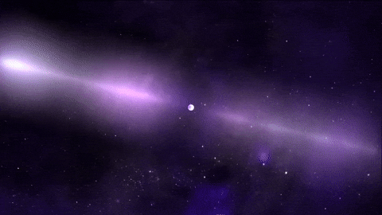
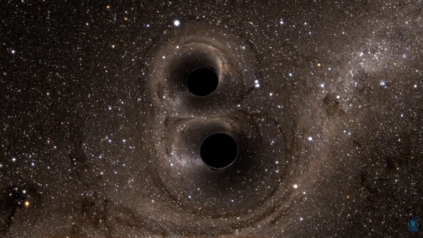
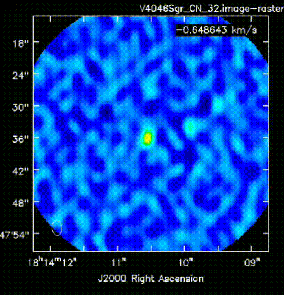
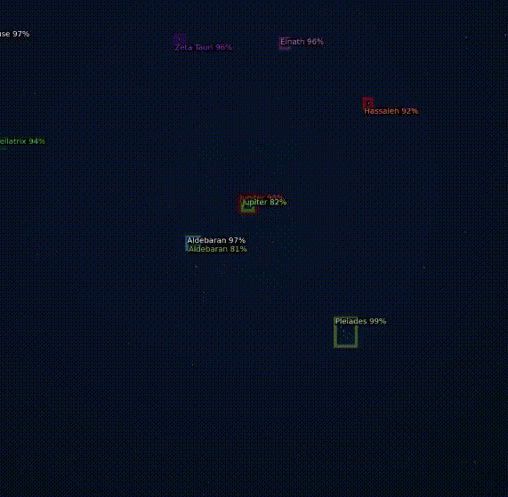
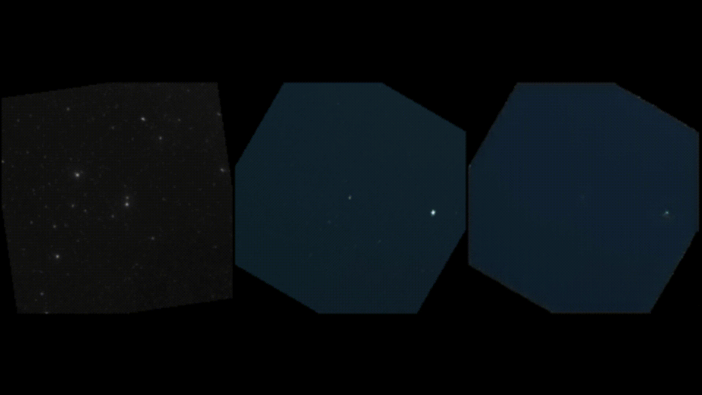

Astrophysics

Pulsar Timing Array — Neural-Net-Based TOA Estimation

PDot Measurement for Detached White Dwarf Binaries as Future LISA Sources
Galactic double white dwarf binaries are a prolific LISA source class, though most detached binaries appear as mono-frequency sources. This work presents optical time-series spectroscopy for known LISA white dwarf binaries, fitting the radial-velocity phase across epochs to demonstrate that orbital-frequency-change measurements are possible for non-eclipsing systems — enabling physical understanding of these future multi-messenger laboratories.

OmniFormer: Context-Aware Transformer Localizing Transient Noise Sources in LIGO
Gravitational-wave detection in advanced LIGO interferometers is strongly affected by transient, often non-astronomical noise sources. To flag such events within the instrumentation, a transformer model was designed that, running in inference mode, predicts the likely nature and source of transient noise in real time, trained on prior observational-run data.

A Comparative Evaluation of Transitional and Full Protoplanetary Disks
Protoplanetary disks are gaseous circumstellar structures that serve as the birthplaces of exoplanets. This study analyzes and compares the chemical composition of transitional disks — which show gaps or discontinuities — against classical protoplanetary disks, observing five transitional disks across three molecular tracers (HCO⁺(4–3), HCO⁺(3–2), and CN(3–2)), contributing new, previously unpublished data on protoplanetary disk astrochemistry.
Electric Propulsion

Machine Learning Techniques for Performance Prediction in Low-Power Hall Effect Thrusters Operating on Monoatomic and Molecular Propellants
The shift toward low-power Hall effect thrusters and alternative molecular propellants requires predictive models that go beyond traditional monatomic empirical scaling laws. This work develops a propellant-agnostic machine learning framework to predict thrust, beam current, and discharge current across varied propellants (Xe, Kr, Ar, CO₂, N₂) in low-power regimes.
Plasma Plume Simulation
Numerical modeling of plasma plumes for electrospray thrusters, characterizing plume behavior via particle-in-cell, n-body, and ML-based simulation methods.
Video: Petro et al., IEPC 2019 (simulation of electrospray thruster plume)
Imaging & Computer Vision

Event-Based Vision for Star Tracking

Benchmarking Deep Learning Object Detection Models on a Feature-Deficient Dataset
Prior object-detection work in astrophysics has largely used high-resolution data from large-aperture telescopes; star trackers supporting missions like JWST have not previously used direct low-SNR data for celestial-body detection. This study evaluates common object detection models on a proprietary low-SNR astrophotography dataset of over 5,000 labeled night-sky images collected over five months, covering eight celestial objects and five constellations — the first benchmark of its kind for smartphone-based astrophotography.

StrCGAN: A Generative Framework for Stellar Image Restoration
Low-SNR astronomical data is often heavily affected by environmental and electronic noise. This work develops a modified CycleGAN architecture for astronomical imaging with 3D convolutional layers to capture volumetric and depth information, trained on near-infrared-to-optical all-sky survey data as ground-truth priors to improve reconstruction fidelity and noise suppression in low-SNR target images.

Utilizing LiDAR to Quantify the Complexities of Autonomous Driving Environments
LiDAR sensing is increasingly used to extend field and range of vision in autonomous applications. This research built a transformer to flag driving elements — road signs, lane markers, pavement — for improved safety in autonomous driving systems, trained on proprietary point-cloud data fused with high-fidelity IMU sensors across varied driving environments.